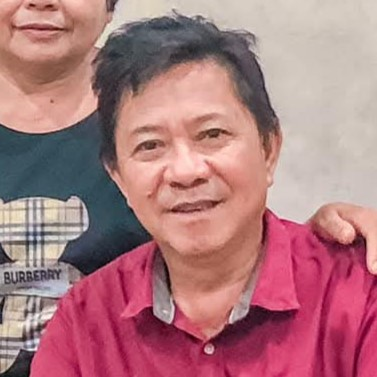
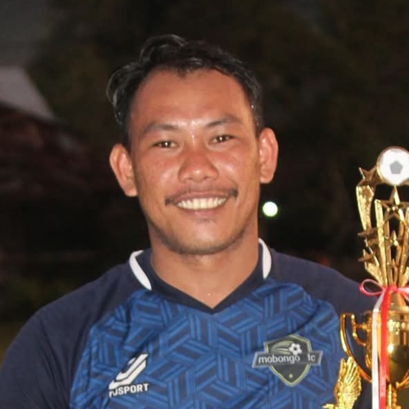
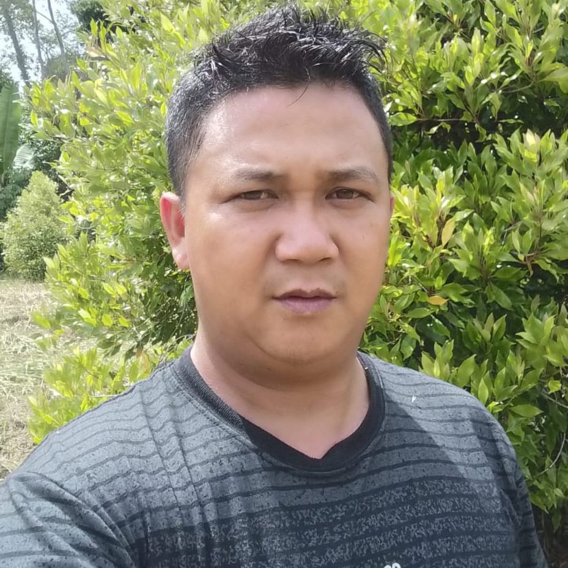

Lembaga Legislatif Desa
Badan Permusyawaratan
Badan Permusyawaratan
Desa (BPD)
BPD berperan sebagai mitra pemerintah desa dalam penyusunan dan penetapan peraturan desa serta menampung aspirasi masyarakat.

Ketua BPD
Alm. Freike Woruntu
Ketua
Chifny Pandoh, SE
Sekretaris BPD

Sunaryo
Wakil Ketua BPD

Ronny Sumual
Anggota BPD
Runly Mawikere
Anggota BPD

Roy Sambeka
Anggota BPD
Jemmy Walingkas
Anggota BPD